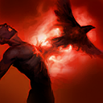

核心裝備
 瑞萊的冰晶節杖
瑞萊的冰晶節杖 黎安卓的折磨
黎安卓的折磨 峽谷製造者
峽谷製造者 好戰者鎧甲
好戰者鎧甲 黑魔禁書
黑魔禁書

以下為本站 7.2d 校正後的標準配置；實戰仍需依敵方陣容調整。


技能優先：Q > E > W

取得靈魂碎片時治療自己並永久提高最大生命，治療與成長效果會讓斯溫在持久戰中逐漸變得更難處理。
向前釋放多道魔法彈，距離越近能讓同一目標承受越多道傷害，是拉回後的主要爆發技能。
在遠距區域召喚魔眼，延遲後造成魔法傷害、緩速與揭露；命中英雄可取得靈魂碎片。
魔爪向前飛出後折返，命中敵人時造成控制；可再次施放把目標拉向斯溫並取得靈魂碎片。
化身惡魔並持續汲取周圍敵人的生命；只要持續吸取敵方英雄即可維持型態，期間可重複施放魔燄造成範圍傷害與緩速。
3技往返命中 → 再次3技拉回 → 2技封住落點 → 1技近距離打滿 → 普攻補傷害
三技拉回後把二技放在落點，敵人被限制走位時再貼近用一技，能同時取得魂屑與完整傷害。
4技開啟惡魔型態 → 3技拉回離場目標 → 1技貼身輸出 → 魔燄範圍傷害緩速 → 2技封鎖退路
保持至少一名敵方英雄在汲取範圍內，並在敵人集中或準備逃離時施放魔燄。
3技控制突進者 → 2技放在主力腳下 → 4技進入長戰 → 1技近身壓血 → 點燃限制回復
敵人主動進場時更容易維持大絕範圍。把二技放在後排附近，配合三技拉回延長控制。
影之爪往返命中後可把敵人拉近並取得靈魂碎片，接近距離施放靈魂拷問可讓多道魔法彈同時命中。真知魔眼延遲較長，應放在三技拉回落點、隊友控制位置或敵人退路，而不是單獨遠距亂放。每次取得魂屑都會治療並永久提高最大生命。
斯溫在河道與物件窄口最強，開啟魔君降生後盡量同時貼近多名敵人，持續汲取生命並用三技拉回想離開範圍的目標。魔燄現在可在惡魔型態期間重複施放，等敵人集中或需要緩速追擊時使用，不必一次開大後立刻全部交完。
站在前排與後排之間，既能承受部分傷害，也能用拉回控制保護主力。面對長射程陣容不要直線追擊，先靠二技封路、隊友控制或側翼接近。大絕能維持的前提是持續汲取敵方英雄，目標離開範圍時要果斷退出，避免孤身追深。
對局名單是本站依英雄機制與目前配置整理的參考，不等同固定勝率。
輔助調整以團隊承傷、解控與保護主力為優先，不為了單一敵人破壞整套功能裝。
觸發：敵方主要輸出集中在射手、物理刺客或普攻型英雄。
中婭沙漏用物防與凝滯提高自保，避免輔助先被秒。
觸發：敵方主要威脅來自法師、AP刺客或大量範圍魔法傷害。
女妖面紗提供魔防與法術護盾，適合保住自己的第一輪功能。
觸發：敵方硬控能直接抓死己方主力，或你進場後會被連續控制。
女妖面紗的法術護盾能先擋一次關鍵技能，讓法師保留施法空間。
堅毅提供韌性，受到硬控時也能短暫提高雙防。
提醒：米凱主要替隊友解控；水星彎刀則是物理英雄自我解控，兩者角色不同。
觸發：敵方有大量治療、吸血或回復，讓己方集火很難完成擊殺。
標準配置已經有重創，不必重複購買。
觸發：己方只有一個主要輸出點，且敵方每波團戰都會集中切入他。
犧牲一個後期輸出位換日輪，讓輔助位的團隊價值高於個人傷害。
提醒：保排調整看己方陣容，不是看到敵方刺客就把所有功能裝都換成防裝。
7.2a 輔助路第三批正式攻略：技能名稱與斯溫重製後的大絕機制依 Riot Games 台灣《激鬥峽谷》斯溫英雄頁及 6.2h 官方重製公告校正，版本基準採官方 7.2a 更新公告；出裝、符文、召喚師技能、技能順序與對局方向依本站輔助資料整合。Tier 維持本站既有輔助路評級。｜v72：套用瑟雷西 v69 輔助固定母版。｜v89 7.2c：依多來源環境資料校正 輔助 Tier，並保留有實戰差異的標準配置。
本站於 2026-08-27 依 Patch 7.2d 重新檢查此配置。 Tier、出裝、符文與對局屬於 Wild Rift Guide 的整理與分析，不是 Riot Games 官方推薦；版本改動後會再依官方公告與實戰資料校正。